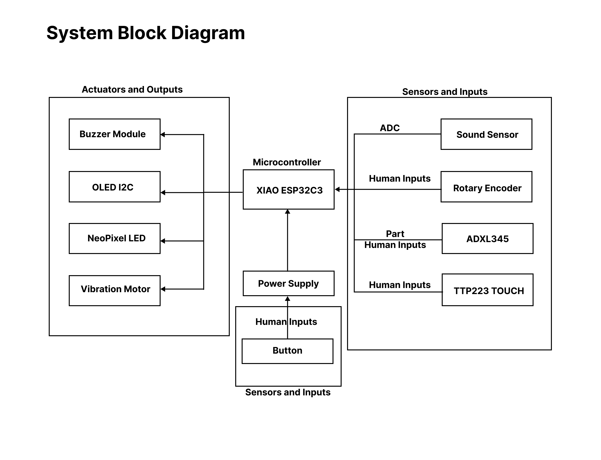

Tilt and shoot
An ADXL345 accelerometer moves the on-screen crosshair. A trigger button fires at standard zombies, with low-pass filtering to stabilize the aim.
A handheld reaction game that turns physical movement, sound, and touch into distinct game actions. Built with CircuitPython around a compact ESP32C3 system, the prototype combines sensing, real-time feedback, and an enclosure designed for play.
Each zombie type asks for a different response. The interaction maps the player's body and surroundings directly into the game rather than relying on a conventional directional controller.
An ADXL345 accelerometer moves the on-screen crosshair. A trigger button fires at standard zombies, with low-pass filtering to stabilize the aim.
A digital sound sensor detects a clap or shout to remove sound-sensitive zombies while suppressing false triggers from the game's own buzzer.
A capacitive touch pad activates the shield and counters touch-sensitive zombies. The same pad is used for a fingerprint-style unlock sequence.
The ESP32C3 coordinates four input channels with visual, audio, and haptic outputs. The OLED carries the game state, while the NeoPixel, buzzer, and vibration motor make success, misses, and damage immediately legible.

The final prototype integrates a ten-level game loop, difficulty settings, tutorials, persistent high scores, and several feedback modes in a modular CircuitPython codebase.
The public repository contains the CircuitPython source, circuit and system diagrams, and the enclosure models used for the prototype.
Course project for TECHIN 512: Sensors and Circuits, University of Washington Global Innovation Exchange.